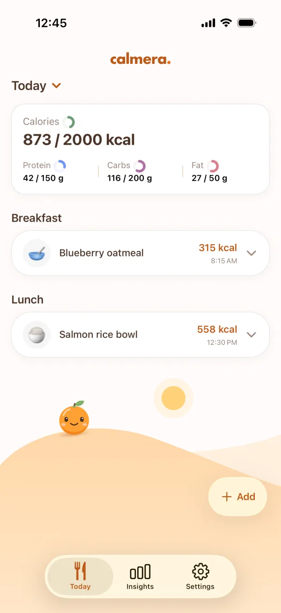
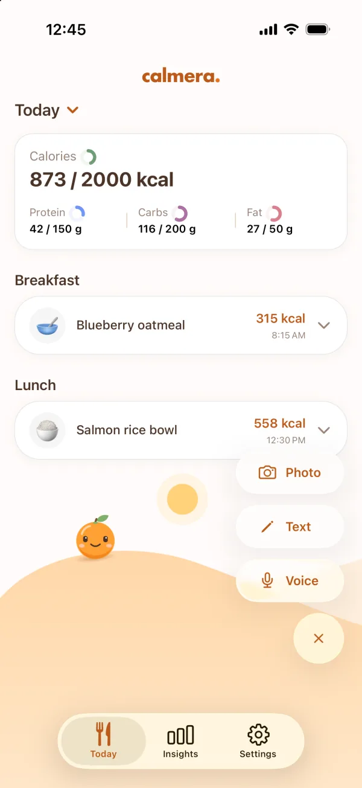
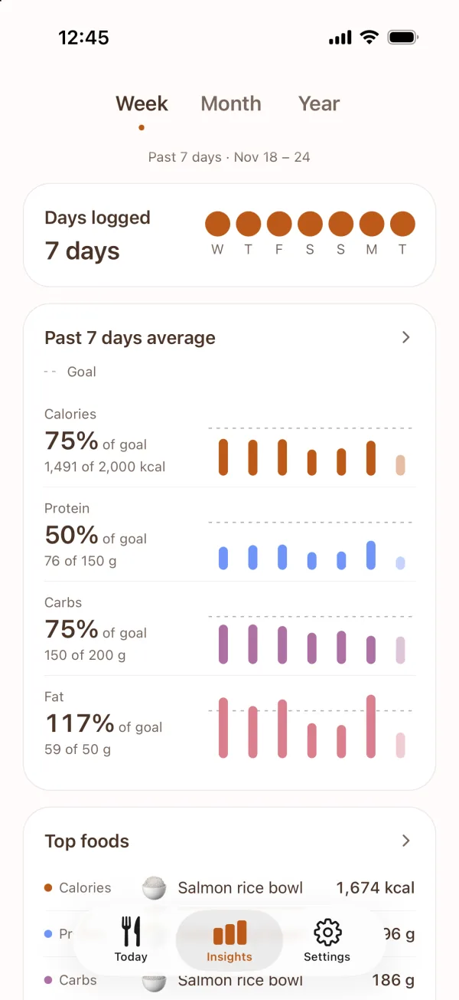

Core features
-
Log by text, voice or photo
Type what you ate, say it, or add a photo. Calmera estimates the calories, protein, carbs and fat, and you can edit anything before you save.
-
Runs on your own AI
Powered entirely by your own AI: your ChatGPT plan or your Claude account. Sign in with ChatGPT directly (Go, Plus or Pro plan), or use your own OpenAI or Claude API key.
-
Choose your model, turn on online search
Pick your own model, such as Sonnet, Opus or Haiku. On models that support it, online search looks up restaurants and brand names you mention, for more accurate calorie and macro estimates.
-
No account
Everything is saved locally on your iPhone, and Calmera has no access to your personal data.
Demo

Today shows what you’ve eaten and how close you are to your goals.

Tap Add, then log a meal by photo, text or voice.

Check the estimate, edit anything that’s off, then save.

Connect your AI once: sign in with ChatGPT or add an API key.

Insights shows your trends by week, month or year.
Support
If you have any questions or run into issues using Calmera, we’d love to hear from you. Email calmeradev@gmail.com.
Privacy
Your journal stays on your iPhone, and there’s no Calmera account. Calmera has no servers of its own: AI requests go straight from your iPhone to the provider you connect.